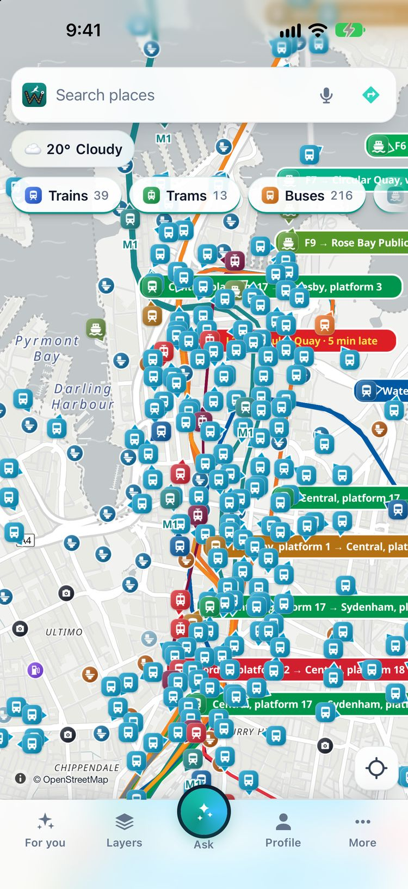

Wayaroo shows Sydney Trains, Sydney Metro, buses, ferries and light rail moving on the map, from Transport for NSW's open data. Tap one to see its line, where it is going, how late it is and its next stops.
Open the live map of SydneyGet the iPhone app
Free. No account. It opens in your browser.

On Friday 13 November 2026 at 9:00 am (Melbourne time), Wayaroo showed 2,345 vehicles in Sydney: 237 trains and metro trains, 2,067 buses, 24 ferries and 17 light rail vehicles.
| Live on the map | Vehicles at that time |
|---|---|
| Trains and metro trains | 237 |
| Buses | 2,067 |
| Ferries | 24 |
| Light rail vehicles | 17 |
The NSW feeds cover more than Sydney. At the same time Wayaroo showed 132 vehicles in Newcastle and 83 in Wollongong.
The numbers change through the day. Source: Transport for NSW Open Data Hub (CC BY 4.0).
Trips in New South Wales come from Transport for NSW's own Trip Planner, with live times. Wayaroo adds an estimate of the Opal fare (peak or off-peak, with the transfer discount and the daily cap) and shows the spare minutes at each change.
The fare deal Wayaroo shows here: Opal fares in NSW are frozen at 2025 prices. (checked on 2 November 2026; the app links to the source.)
Yes. Wayaroo shows Sydney's trains, metro, buses, ferries and light rail moving on one map. It is free and needs no account.
Yes. Each ferry is on the map with its route. Tap a wharf to see the next departures.
Wayaroo shows its own estimate of the Opal fare for each trip. The fare you pay is set by Transport for NSW.
From the Transport for NSW Open Data Hub (CC BY 4.0). Transport for NSW does not endorse Wayaroo. Positions can be late or wrong, so always check the sign at the stop.
Yes. Wayaroo is free and needs no account. Your settings stay on your phone.
Other cities: Melbourne · Brisbane · Gold Coast · Adelaide · Canberra · Cairns · all cities
Wayaroo is an independent app from Ozrsym Pty Ltd. Transport for NSW does not run or endorse it. Live positions and times come from the operator's feed. They can be late or wrong. Always check the sign at the stop. Full list of sources: data credits.